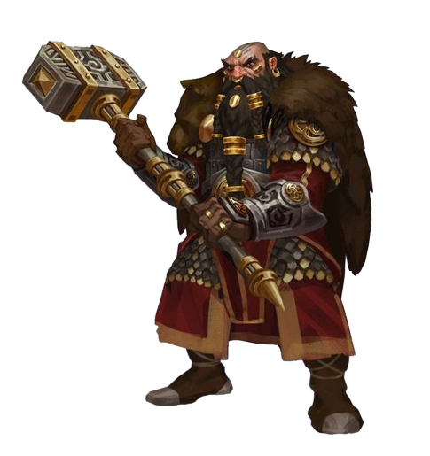
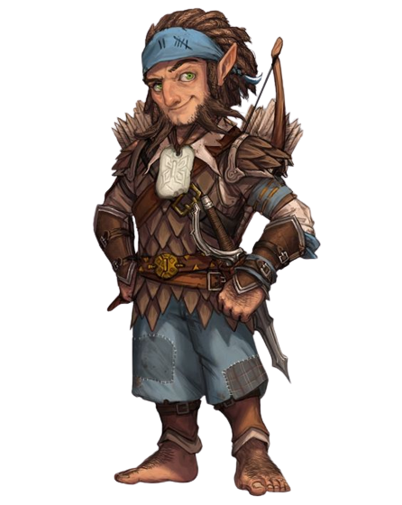
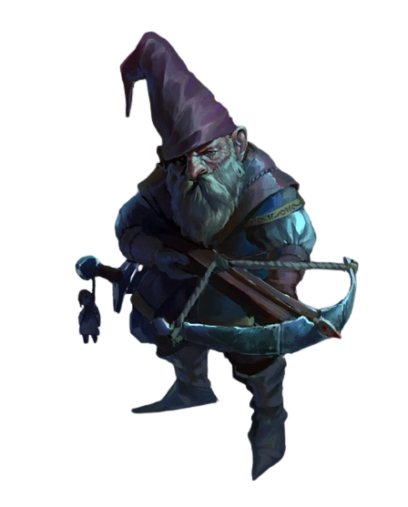

Anão
Os Anões, uma raça de seres robustos e intrépidos, são reconhecidos por sua força física e habilidades em trabalhos artesanais. Originários das profundezas das montanhas e das vastas cavernas subterrâneas, os Anões são um povo enraizado na história e na tradição. Com uma resistência inigualável, possuem um espírito indomável e uma profunda conexão com a terra. Os Anões são uma das raças mais antigas e respeitadas do mundo de Dungeons & Dragons, e mergulhar em sua cultura é uma jornada fascinante. Descubra os segredos e os desafios enfrentados por esses valentes habitantes das montanhas e explore o fascinante mundo dos Anões.
Traços Raciais dos Anões
Acostumado à vida subterrânea, você tem uma visão superior no escuro e na penumbra. Você enxerga na penumbra a até 18 metros como se fosse luz plena, e no escuro como se fosse na penumbra. Você não pode discernir cores no escuro, apenas tons de cinza.
Você possui vantagem em testes de resistência contra venenos e resistência contra dano de veneno.
Você tem proficiência com machados de batalha, machadinhas, martelos leves e martelos de guerra.
Você tem proficiência em uma ferramenta de artesão à sua escolha entre: ferramentas de ferreiro, suprimentos de cervejeiro ou ferramentas de pedreiro.
Sempre que você realizar um teste de Inteligência (História) relacionado à origem de um trabalho em pedra, você é considerado proficiente na perícia História e adiciona o dobro do seu bônus de proficiência ao teste, ao invés do seu bônus de proficiência normal.
Elfo
Os Elfos, seres graciosos e dotados de uma beleza etérea, são uma raça lendária que encanta a todos no mundo de Dungeons & Dragons. Conhecidos por sua longevidade e habilidades mágicas, os Elfos são seres sintonizados com a natureza e suas energias místicas. Originários de florestas ancestrais e reinos élficos majestosos, eles são portadores de uma sabedoria ancestral e uma conexão profunda com o mundo natural. Com uma agilidade incomparável e uma destreza impressionante, os Elfos são temidos por seus inimigos e admirados por sua graça. Explore os mistérios e as lendas que envolvem essa raça enigmática e descubra o papel dos Elfos no reino de Dungeons & Dragons. Adentre o mundo dos Elfos e desvende a magia e a elegância que os envolvem.

Traços Raciais dos Elfos
Acostumado às florestas crepusculares e ao céu noturno, você possui uma visão superior em condições de escuridão e na penumbra. Você pode enxergar na penumbra a até 18 metros como se fosse na luz plena, e no escuro como se fosse na penumbra. Você não pode discernir cores no escuro, apenas tons de cinza.
Você tem proficiência na perícia Percepção.
Você tem vantagem nos testes de resistência para resistir a ser enfeitiçado e magias não podem colocá-lo para dormir
Elfos não precisam dormir. Ao invés disso, eles meditam profundamente, permanecendo semiconscientes, durante 4 horas por dia. (A palavra em idioma comum para tal meditação é "transe".) Enquanto medita, um elfo é capaz de sonhar de certo modo. Esses sonhos na verdade são exercícios mentais que se tornam reflexos através de anos de prática. Depois de descansar dessa forma, você ganha os mesmos benefícios que um humano depois de 8 horas de sono.
Halfling
Os Halflings, seres pequenos de coração valente, são uma raça encantadora e alegre no mundo de Dungeons & Dragons. Apesar de sua estatura diminuta, os Halflings possuem uma natureza destemida e uma habilidade inata para encontrar a felicidade nas coisas simples da vida. Originários de pacíficos vilarejos campestres, esses seres amigáveis e acolhedores são conhecidos por sua astúcia e agilidade surpreendentes. Sempre prontos para uma aventura, os Halflings enfrentam os desafios com um sorriso no rosto e uma perspicácia admirável. Descubra as tradições e a cultura única dos Halflings enquanto explora suas aldeias acolhedoras e participa de suas festividades alegres. Aventure-se ao lado desses corajosos seres em um mundo repleto de surpresas e encantamentos.
Traços Raciais dos Halflings
Quando você obtiver um 1 natural em uma jogada de ataque, teste de habilidade ou teste de resistência, você pode jogar de novo o dado e deve utilizar o novo resultado.
. Você tem vantagem em testes de resistência contra ficar amedrontado.
Você pode mover-se através do espaço de qualquer criatura que for de um tamanho maior que o seu.
Você pode tentar se esconder mesmo quando possuir apenas a cobertura de uma criatura que for no mínimo um tamanho maior que o seu.
Você tem vantagem em testes de resistência contra veneno e tem resistência contra dano de veneno.
Humano
Os Humanos, seres versáteis e adaptáveis, são uma raça essencial no mundo de Dungeons & Dragons. Com uma capacidade de se moldarem a diferentes circunstâncias e culturas, os Humanos são encontrados em todos os cantos do reino, deixando sua marca na história e na sociedade. Dotados de uma determinação incomparável, os Humanos têm uma incrível diversidade de talentos e habilidades, o que os torna uma força a ser reconhecida. Seja como aventureiros destemidos, líderes carismáticos ou estudiosos ávidos, os Humanos são movidos por suas ambições e desejos. Em um mundo cheio de criaturas místicas e maravilhas fantásticas, os Humanos representam a essência da humanidade e seu potencial ilimitado.

Traços Raciais dos Humanos
Você adquire um talento de sua escolha.
Os humanos não possuem inclinação a nenhuma tendência em especial. Os melhores e os piores são encontrados entre eles.
Os humanos variam muito em altura e peso, podem ter quase 1,50 metro ou mais de 1,80 metro. Independentemente da sua posição entre esses valores, o seu tamanho é Médio.
Você pode falar, ler e escrever Comum e outro idioma adicional, à sua escolha. Os humanos normalmente aprendem os idiomas dos povos que convivem, incluindo dialetos obscuros. Eles gostam de rechear seu discurso com palavras emprestadas de outras línguas: xingamentos orcs, expressões musicais élficas, frases militares anãs e outros.
Draconato
Os Draconatos, seres nobres e poderosos, são uma raça fascinante no mundo de Dungeons & Dragons. Descendentes diretos dos poderosos dragões, os Draconatos possuem escamas resplandecentes e uma presença imponente. Com habilidades e traços herdados de seus ancestrais dracônicos, esses seres são dotados de uma força formidável e habilidades mágicas. Com uma determinação inabalável e um orgulho inato, os Draconatos honram seu legado e buscam alcançar a grandeza em todas as suas empreitadas. Adentre o mundo dos Draconatos e descubra as lendas e os segredos envoltos nessa raça ancestral, enquanto desvenda o mistério que envolve sua conexão com os temíveis dragões.

Traços Raciais dos Draconatos
Você possui um ancestral dracônico. Escolha um tipo de dragão da tabela Ancestral Dracônico. Sua arma de sopro e resistência a dano são determinadas pelo tipo de dragão.
Você pode usar uma ação para exalar energia destrutiva. Seu ancestral dracônico determina o tamanho, formado e tipo de dano que você expele.
Você possui resistência ao tipo de dano associado ao seu ancestral dracônico.
Gnomo
Os Gnomos, seres curiosos e engenhosos, são uma raça encantadora e inventiva no mundo de Dungeons & Dragons. Com uma paixão pela magia e pela tecnologia, os Gnomos são mestres da inovação e da criatividade. Dotados de uma mente brilhante e uma imaginação sem limites, eles são responsáveis por muitas das maravilhas mecânicas e encantadas que existem no reino. Apesar de sua estatura diminuta, os Gnomos são destemidos e corajosos, prontos para enfrentar qualquer desafio com um sorriso no rosto. Explore a cultura vibrante e os segredos ocultos dos Gnomos, enquanto mergulha no mundo de invenções e descobertas que eles criaram.
Traços Raciais dos Gnomos
Acostumado à vida subterrânea, você tem uma visão superior no escuro e na penumbra. Você enxerga na penumbra a até 18 metros como se fosse luz plena, e no escuro como se fosse na penumbra. Você não pode discernir cores no escuro, apenas tons de cinza
Você possui vantagem em todos os testes de resistência de Inteligência, Sabedoria e Carisma contra magia.
Através de sons e gestos, você pode comunicar ideias simples para Bestas pequenas ou menores. Gnomos da floresta amam os animais e normalmente possuem esquilos, doninhas, coelhos, toupeiras, pica-paus e outras criaturas como amados animais de estimação.
Toda vez que você fizer um teste de Inteligência (História) relacionado a itens mágicos, objetos alquímicos ou mecanismos tecnológicos, você pode adicionar o dobro do seu bônus de proficiência, ao invés de qualquer bônus de proficiência que você normalmente use.
Meio-Elfo
Os Meio-Elfos, seres de herança mágica e espírito livre, são uma raça fascinante que transcende as fronteiras entre humanos e elfos no mundo de Dungeons & Dragons. Com uma mistura única de beleza élfica e determinação humana, os Meio-Elfos possuem o melhor de ambos os mundos. Dotados de uma natureza inquieta e uma sede por aventura, eles são conhecidos por sua habilidade diplomática e sua capacidade de se adaptar a diferentes culturas e ambientes. Com uma conexão especial com a natureza e a magia, os Meio-Elfos possuem um espírito livre e uma curiosidade incansável. Desvende os segredos dessa raça híbrida e mergulhe em um mundo de dualidade e potencial ilimitado.

Traços Raciais dos Meio-Elfos
Você ganha proficiência em duas perícias, à sua escolha.
Você possui vantagem em testes de resistência contra encantamento e magia não pode colocar você pra dormir.
Graças ao seu sangue élfico, você tem uma visão superior no escuro e na penumbra. Você enxerga na penumbra a até 18 metros como se fosse luz plena, e no escuro como se fosse na penumbra. Você não pode discernir cores no escuro, apenas tons de cinza.
Meio-Orc
Os Meio-Orcs, seres fortes e resilientes, são uma raça poderosa e imponente no mundo de Dungeons & Dragons. Resultado da união entre humanos e orcs, eles carregam uma mistura única de coragem, ferocidade e determinação. Com uma aparência marcante e uma força formidável, os Meio-Orcs enfrentam os desafios da vida com uma determinação inabalável. Apesar das adversidades e do estigma que podem enfrentar, os Meio-Orcs têm uma capacidade incrível de superação e uma lealdade feroz. Explore a rica cultura e a história complexa dos Meio-Orcs enquanto descobre sua capacidade de se tornarem heróis improváveis em um mundo repleto de aventuras e perigos.

Traços Raciais dos Meio-Orcs
Graças ao seu sangue orc, você tem uma visão superior no escuro e na penumbra. Você enxerga na penumbra a até 18 metros como se fosse luz plena, e no escuro como se fosse na penumbra. Você não pode discernir cores no escuro, apenas tons de cinza.
Você adquire proficiência na perícia Intimidação
Quando você é reduzido a 0 pontos de vida mas não é completamente morto, você pode voltar para 1 ponto de vida. Você não pode usar essa característica novamente até completar um descanso longo.
Quando você atinge um ataque crítico com uma arma corpo-a-corpo, você pode rolar um dos dados de dano da arma mais uma vez e adicioná-lo ao dano extra causado pelo acerto crítico.
Tiefling
Os Tieflings, seres marcados pelo sangue infernal, são uma raça intrigante e enigmática no mundo de Dungeons & Dragons. Com traços demoníacos em sua aparência, eles possuem uma beleza exótica e um ar misterioso. Herdeiros de pactos ancestrais e ligações com o plano infernal, os Tieflings possuem uma conexão única com a magia das trevas. Apesar do estigma que carregam, eles são indivíduos determinados e resilientes, capazes de resistir à influência demoníaca dentro de si. Explore a dualidade entre a escuridão e a luz que permeia a vida dos Tieflings e descubra os segredos e mistérios que envolvem essa raça fascinante.

Traços Raciais dos Tieflings
Graças a sua herança infernal, você tem uma visão superior no escuro e na penumbra. Você enxerga na penumbra a até 18 metros como se fosse luz plena, e no escuro como se fosse na penumbra. Você não pode discernir cores no escuro, apenas tons de cinza.
Você possui resistência a dano de fogo.
Você conhece o truque taumaturgia. Quando você atingir o 3° nível, você poderá conjurar a magia repreensão infernal uma vez por dia como uma magia de 2° nível. Quando você atingir o 5° nível, você também poderá conjurar a magia escuridão. Você precisa terminar um descanso longo para poder usar as magias desse traço novamente. Sua habilidade de conjuração para essas magias é Carisma.